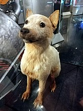
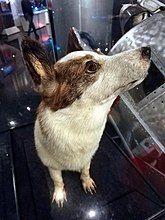

Через несколько месяцев после полёта Стрелка принесла здоровое потомство из шестерых щенков. Белка и Стрелка жили при Государственном научно-исследовательском и испытательном институте авиационной и космической медицины и умерли в глубокой старости. В настоящее время их чучела находятся в Мемориальном музее космонавтики в Москве.
 